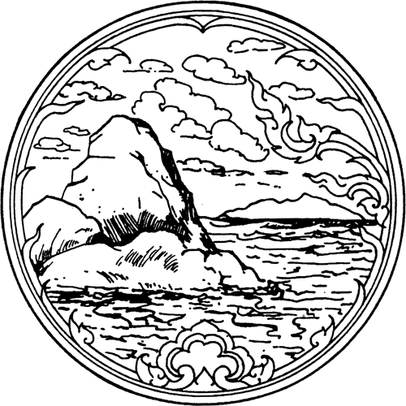
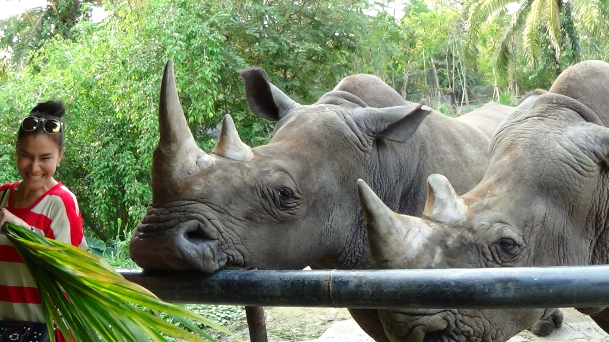
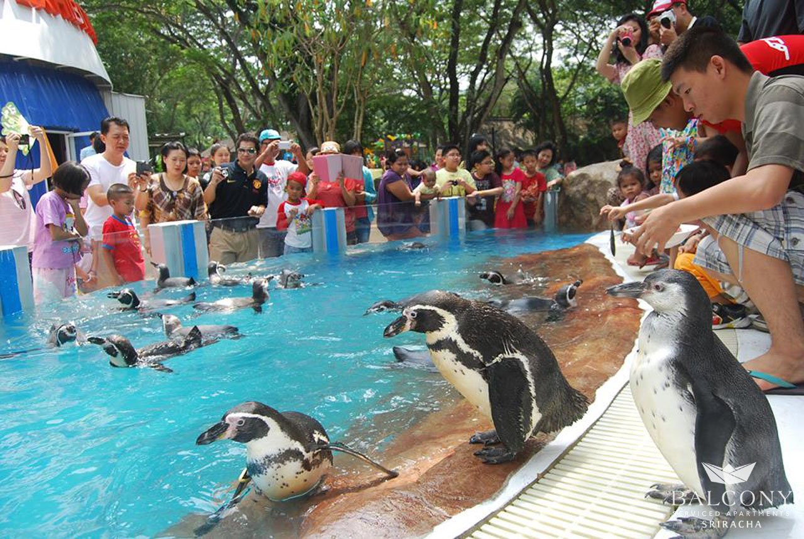
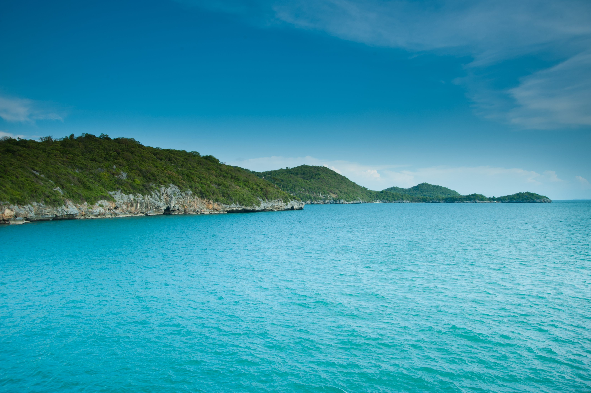
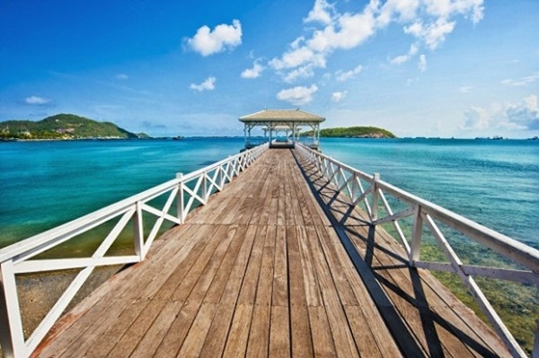
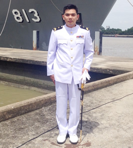

จังหวัดชลบุรี

คำขวัญประจำจังหวัด
ทะเลงาม ข้าวสารอร่อย อ้อยหวาน จักสานดี ประเพณีวิ่งควาย
ชลบุรี เป็นจังหวัดที่ติดกับอ่าวไทยแห่งหนึ่งในภาคตะวันออก ซึ่งมีสถานที่ท่องเที่ยวที่มีชื่อเสียงหลายแห่งตั้งอยู่ นอกจากด้านอุตสาหกรรมการท่องเที่ยวแล้ว ในขณะเดียวกันนั้นยังถือว่าเป็นจังหวัดที่มีความสำคัญทางเศรษฐกิจเป็นอย่างมากรองจากกรุงเทพมหานคร นอกจากนั้นยังเป็นทั้งในด้านพาณิชยกรรมและอุตสาหกรรมต่างๆ ของประเทศแห่งหนึ่ง
สวนสัตว์เปิดเขาเขียว

สวนสัตว์เปิดเขาเขียวจัดตั้งขึ้นเมื่อปี พ.ศ. 2517 โดยฟื้นฟูสภาพป่าเขาเขียวที่เสื่อมโทรมขึ้นมาใหม่ จากนั้นได้นำสัตว์บางส่วนจากสวนสัตว์ดุสิตมาปล่อยเลี้ยงไว้ตามสภาพธรรมชาติ แล้วเริ่มเปิดให้คนเข้าชมเมื่อปี พ.ศ. 2521 ปัจจุบันมีเนื้อที่กว่า 5,000 ไร่ นับเป็นสวนสัตว์เปิดที่มีเนื้อที่มากที่สุดในโลก แบ่งออกเป็นส่วนวิจัยและศึกษาพันธุ์สัตว์ป่าหายาก สวนสัตว์เปิด และส่วนบริการ จุดเด่นอีกอย่างหนึ่งของที่นี่ คือ “สวนนก” ซึ่งสร้างขึ้นด้วยโครงเหล็กขนาดใหญ่คลุมด้วยตาข่าย กินพื้นที่ถึง 5 ไร่ ภายในมีเส้นทางเดินขึ้นไปเนินเขา แล้ววนกลับลงมา ที่นี่มีนกหลายชนิดส่งเสียงร้องและบินไปมาอยู่ทั่วสวน อาทิ นกฟลามิงโก้ นกเขียวคราม นกกางเขนดง นกแต้วแล้ว นกขมิ้น ไก่ฟ้า เป็ดก่า และอื่นๆ นอกจากนี้ทุกวันยังมีการจัดกิจกรรมชมสัตว์ในเวลากลางคืน (Night Safari) แก่บุคคลทั่วไปอีกด้วย
ที่ตั้ง : บริเวณเชิงเขาเขียว ห่างจากตัวเมืองศรีราชาเข้าไป 25 กิโลเมตร
การเดินทาง :
-รถยนต์ส่วนตัว จากถนนสุขุมวิทบริเวณตลาดบางพระ เดินทางไปตามป้ายบอกทางสวนสัตว์เปิดเขาเขียว ที่มีอยู่อย่างชัดเจนเป็นระยะๆ ถนนจะลัดเลาะไปตามขอบอ่างเก็บน้ำบางพระ ผ่านสนามกอล์ฟบางพระ ขึ้นสะพานข้ามทางหลวงหมายเลข 7 (กรุงเทพฯ-พัทยา) จากนั้นตรงต่อไปอีก 7 กิโลเมตร จนถึงปากทางเข้าสวนสัตว์ฯ สามารถขับรถวนภายในสวนสัตว์ และจอดแวะชมตามจุดต่างๆได้โดยสะดวก
-รถสองแถว คิวอยู่ในถนนไปอ่างเก็บน้ำบางพระ ตรงข้ามศาลเจ้า จะรอให้คนเต็มหรือจะเหมาไปก็ได้
เวลาทำการ : 08.00-18.00 น. ส่วนบริการ Night Safari มี 2 รอบ คือเวลา 19.00 น. และ 20.00 น.
ค่าเข้าชม : ชาวไทย ผู้ใหญ่ 100 บาท เด็ก 50 บาท ชาวต่างชาติ 300 บาท
ติดต่อ : โทร. 0-3829-8270, 0-3829-8195 โทรสาร. 0-3829-8272
เว็บไซต์ www.zoothailand.com

เกาะสีชัง

จุดท่องเที่ยวสำคัญบนเกาะสีชัง ได้แก่
ศาลเจ้าพ่อเขาใหญ่ ตั้งอยู่บนเขาคยาศิระ ห่างจากท่าเรือเทววงศ์ไปทางด้านเหนือของเกาะ เป็นสิ่งศักดิ์สิทธิ์ที่ชาวเกาะสีชังให้ความเคารพนับถือ ลักษณะเป็นถ้ำซึ่งดัดแปลงเป็นศาสนสถาน ที่ผสมผสานด้วยสถาปัตยกรรมจีนและไทย ภายในมีศาลเจ้าพ่อเฮ่งเจีย ศาลเจ้าแม่กวนอิม วิหารพระสังกัจจายน์ ฯลฯ ช่วงเทศกาลตรุษจีนจะมีผู้คนมาบวงสรวงกันอย่างเนืองแน่น เชื่อกันว่าถ้าใครได้มาไหว้ครบ 3 ครั้งใน 3 ปี จะร่ำรวย จากบริเวณศาลสามารถมองเห็นทิวทัศน์บ้านเรือนด้านหน้าเกาะได้อย่างชัดเจน
รอยพระพุทธบาท อยู่บนยอดเขาเหนือศาลเจ้าพ่อเขาใหญ่ จำลองขึ้นจากรอยพระพุทธบาทที่สร้างขึ้นในสมัยพระเจ้าอโศกมหาราช เมื่อปี พ.ศ. 500 มีความยาวศอกเศษ ทำจากหินชนวน สมเด็จฯ กรมพระยาดำรงราชานุภาพทรงนำมาจากวัดพุทธคยา ประเทศอินเดีย แล้วอัญเชิญไปประดิษฐานไว้บนยอดเขา นอกจากนี้ยังมีพระบรมสารีริกธาตุให้สักการบูชาอีกด้วย จุดชมวิวยอดเขาพระพุทธบาทสามารถชมอาทิตย์อัสดงได้งดงามมาก เพราะจะมองเห็นตัวเกาะสีชังทั้งเกาะ รวมถึงเกาะขามใหญ่ และทัศนียภาพทะเลโดยรอบ
ช่องเขาขาด และหาดหินกลม ตั้งอยู่ด้านหลังเกาะ ชาวบ้านจึงเรียกกันติดป่าว่า “หลังเกาะ” หากนั่งเรือผ่านจะเห็นเป็นช่องเขา ในบริเวณนี้มีสะพานสำหรับเดินชมทิวทัศน์ ซึ่งมองเห็นพระอาทิตย์อัสดงได้อย่างงดงาม นอกจากนี้ยังมีหาดหินกลมที่เต็มไปด้วยก้อนหินขนาดต่างๆมากมาย ในอดีตหาดหินกลมเคยเป็นสถานที่ตั้งพลับพลาที่ประทับชมทิวทัศน์ของรัชกาลที่ 5
ศิลาจารึก ตั้งอยู่ข้างสนามฟุตบอลโรงเรียนเกาะสีชัง เป็นแผ่นหินขนาดใหญ่จารึกเรื่องการสร้างพระราชฐานบนเกาะสีชัง
เก๋งจีน ลักษณะเป็นศาลาโบราณ มีรูปมังกรและนกยูงประดับอยู่ตามยอด เคยเป็นที่ประทับชั่วคราวของรัชกาลที่ 5 ครั้งพระองค์เสด็จประพาส ปัจจุบันได้รับการบูรณะขึ้นใหม่ จนกลับคืนความงามดังเดิม
พระจุฑาธุชราชฐาน อยู่ห่างจากท่าเรือเทววงศ์ลงมาทางใต้ของเกาะ สร้างขึ้นในสมัยรัชกาลที่ 5 เพื่อเป็นที่ประทับฤดูร้อน ภายในบริเวณมีภูมิทัศน์สวยงาม ด้านหน้าเป็นชายหาดท่าวัง ถัดขึ้นไปเป็นตึกวัฒนา พระตำหนักทรงปั้นหยา เรือนไม้ลวดลายขนมปังขิง ตึกผ่องศรีหรือศาลาแปดเหลี่ยม ตึกเขียว (เรือนมรกตสุทธิ์) ตึกอภิรมย์ และวัดอัษฎางค์นิมิตบนยอดเขา ซึ่งก่อสร้างตามแบบสถาปัตยกรรมไทยผสมตะวันตก ส่วนพระราชวังทำด้วยไม้สักได้รื้อไปก่อสร้างเป็นพระที่นั่งวิมานเมฆที่กรุงเทพฯ
หาดเขาถ้ำพัง อยู่ทางด้านตะวันตกของเกาะ เป็นชายหาดกว้าง สะอาด และสวยงาม เม็ดทรายละเอียด น้ำใสสะอาดเหมาะแก่การลงเล่นน้ำ
วัดจุฑาทิศธรรมสภารามวรวิหาร เป็นพระอารามหลวงซึ่งรัชกาลที่ 5 โปรดเกล้าฯ ให้สร้างขึ้นเมื่อปี พ.ศ. 2435 เพื่อเฉลิมพระเกียรติสมเด็จฯ เจ้าฟ้าจุฑาธุชธราดิลก ในวาระที่ประสูติ ณ เกาะสีชัง วัดนี้ตั้งอยู่บริเวณเชิงเขาคยาศิระ มีโบสถ์ หอระฆัง พระพุทธบาทจำลอง และพระประธานปางมารวิชัยที่งดงามที่ตั้ง : อยู่ห่างจากชายฝั่งทะเลอำเภอศรีราชาประมาณ 12 กิโลเมตร
การเดินทาง : เดินทางโดยเรือเมล์จากศรีราชา ใช้เวลาประมาณ 45 นาที โดยขึ้นเรือได้ที่ท่าเรือจรินทร์ ถนนเจิมจอมพลในอำเภอศรีราชา มีเรือโดยสารไปเกาะสีชังทุกวัน ระหว่างเวลา 07.00-20.00 น. ออกทุกๆชั่วโมง อัตราค่าโดยสาร คนละ 20 บาท และจากเกาะสีชังกลับเข้าฝั่งศรีราชา มีเรือวิ่งตั้งแต่ 06.00-18.00 น. มีเรือออกทุกๆชั่วโมง สอบถามเพิ่มเติมได้ที่เรือสีชังพาเลซ
โทร. 0-3821-6276-82 และเรือแสงประทีปบริการ โทร. 0-3831-3687
เวลาทำการ : สามารถเที่ยวชมได้ทุกวัน
ค่าเข้าชม : ไม่เสียค่าเข้าชม

ข้อมูลติดต่อ
ททท. สำนักงานพัทยา ชลบุรี
พื้นที่รับผิดชอบ: ชลบุรี ที่อยู่ : 609 หมู่ 10 ถ.พระตำหนัก ต.หนองปรือ อ.บางละมุง จ.ชลบุรี 20150
โทรศัพท์. 0 3842 7667, 0 3842 8750, 0 3842 3990
โทรสาร. 0 3842 9113
อีเมล: tatchon@tat.or.th
เว็บไซต์: Thailand Travel Guide for Pattaya.
ข้อมูลผู้จัดทำ

พันจ่าโท นันทพล สังข์น้ำมนต์ รหัสประจำตัว 5696016301